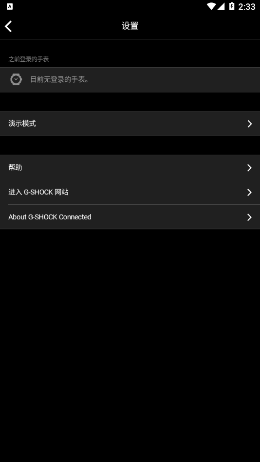
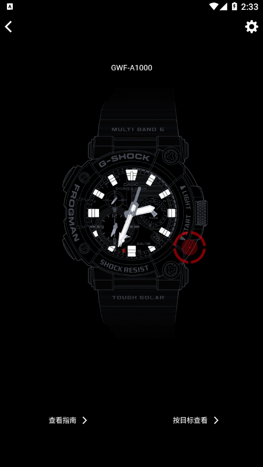

用了三年 G-SHOCK Connected，才发现我一直在跟安卓省电优化较劲
从配对成功就断、以为手表坏了，到摸清安卓后台杀进程的脾气，再到卡西欧悄悄停更——这篇聊点长期使用才会暴露的问题。
当初为什么装
说实话，装 G-SHOCK Connected 没什么特别的理由——买了块 G-SHOCK，它的官网上有款配套应用能自动对时，安装包从官方下载拿的，就随手装了。那时候觉得它的作用大概跟手表上的手动对时按钮差不多，就是按一下省点力气。谁能想到，这一装就装了三年多，期间跟安卓系统的省电机制、国产 ROM 的后台策略、还有卡西欧自己的更新节奏，掰扯了不知道多少回。
变化三连：哪些越用越顺手、哪些越用越烦
最顺手的事：自动时间校正终于跑起来了
装完第一次配对，手表蓝牙图标亮了三分钟就灭了。手动触发对时能跑，切到后台就断——我以为是手表蓝牙模块有问题，翻了好几天说明书。后来才搞明白，这根本不是手表的问题，是安卓系统在后台把应用强制停掉省电费。
设完电池优化白名单、自启动允许、后台锁定这一串之后（详细步骤在g-shock文档里有），手表蓝牙图标终于能常驻了。从那时候开始，每天早上起来手表时间自动跟手机校准，比手机自己的网络时间还准个一两秒——G-SHOCK 的电波接收本来就精度高，再加上应用的辅助对时，这块表的时间准到我从来不看手机的时间。

这个功能成了我每天离不开的东西。早上起来扫一眼手表就知道几点，根本不用掏手机。至于应用里的其他功能——手机搜索手表（Phone Finder）、训练日志、闹钟同步——我几乎没碰过。手表本身就是运动款，丢的概率极低，训练数据我也不记。
最烦的事：国产 ROM 的后台权限每次更新都重置
这是我当初完全没预料到的日常维护成本。我换过三台手机，都是国产 ROM（从 MIUI 到 ColorOS 再到 OriginOS），每次系统大版本更新，之前设好的自启动、后台锁定、电池优化白名单，有概率被 ROM 厂商重置。表现就是某个早上起来手表蓝牙又断了，自动对时不跑了，得重新回去找设置、重新开一遍。
原生安卓反而没这个问题——设完就设完了，不会莫名其妙被清。国产系统因为定制化程度深，后台限制比原生严得多，而且每个品牌的设置入口都不一样：小米要下拉通知栏锁应用卡片、OPPO 要进后台管理开"允许后台弹出界面"、华为要在启动管理里关自动管理手动放行。每次去新手机上装一遍 G-SHOCK Connected，光设这些权限就要花十分钟。
还有个坑：换手机的时候，旧手机的白名单不会自动带过去，所有设置都要从零再走一遍。我第一次换手机的时候忘了这茬，结果新手机上手表配对成功了但自动对时死活不跑，折腾了好几天才想起要重设权限。
最意外的发现：卡西欧悄悄停更了
我一直以为大厂的应用会跟着手机系统迭代更新。Android 13 出来的时候等适配，Android 14 出来的时候再等，结果等来等去，3.0.3 就是最后一个版本了——卡西欧把 G-SHOCK Connected 的新功能和系统适配都停了。
最后这个版本是 2022 年发的，适配到了 Android 12 把蓝牙权限拆成「附近设备」和「位置」两项的变化。Android 13 之后的改动它就没跟进了。目前看 Android 13~15 的蓝牙和后台 API 还算兼容，能凑合用，但 Android 16 之后会怎么样谁也说不准——卡西欧不更了，遇到问题只能自己想办法。

观感修正：当初的几个判断全变了
高估了卡西欧的维护意愿。我以为 G-SHOCK Connected 是手表生态的核心应用，会一直更下去。结果它停了，而且停得悄无声息——没有公告，没有迁移提示，就这么没了。好在 3.0.3 这个版本质量不差，Android 12 之前的坑都填得差不多了，用起来没什么硬伤。
低估了安卓省电机制的威力。当初以为「一个蓝牙应用而已，多大点事」，结果它是我装过的应用里被系统杀后台最频繁、最坚决的一个。所有需要后台蓝牙连接的应用——智能手环、车载蓝牙、还有这个 G-SHOCK Connected——全都是安卓省电策略的受害者。这不是应用 Bug，是系统设计取舍。
没想到国产 ROM 是最大的变数。原生安卓上设一次白名单管几年，国产 ROM 上一次系统更新就可能给你重置。现在我养成了习惯，每次手机系统大更新完第一件事就是去检查 G-SHOCK Connected 的后台权限，已经成了条件反射。
去留结论
不会卸载。手表本身是主力计时工具，G-SHOCK Connected 只是辅助对时的配角。自动时间校正每天都在跑，手表时间比手机网络时间还准，这个价值是实实在在的。
但我也在给自己留后路。如果哪天换了不支持蓝牙的 G-SHOCK 表款（比如纯电波款或太阳能款），或者新手机系统直接装不上这个应用了——那就卸。卡西欧停更之后，我也在留意官方的 CASIO WATCHES 应用能不能接手，但目前 CASIO WATCHES 还不支持 G-SHOCK 的全系列，只能先等等看。
有个信号出现就该换了：哪天 Android 系统大版本更新之后，G-SHOCK Connected 不再能后台维持蓝牙连接、自动对时彻底失效——那就是它真的走完了。到时候要么换 CASIO WATCHES，要么就干脆回到手动对时。反正 G-SHOCK 的手动对时也没多难，就是每次按按钮的事。
如果你也在用这款应用——别等到配对断了才想起设后台权限。提前把电池优化白名单、自启动、后台锁定这三样都开了，省得像我当初那样以为手表坏了。国产系统用户尤其要注意，系统更新完回头检查一遍，别让 ROM 厂商替你清了。上面提到的后台设置要点、国产 ROM 兼容性清单还有卡西欧停更的时间线，我在GitHub、Gitee、GitCode 三处各存了一份，怕哪天找不到就翻出来对照。